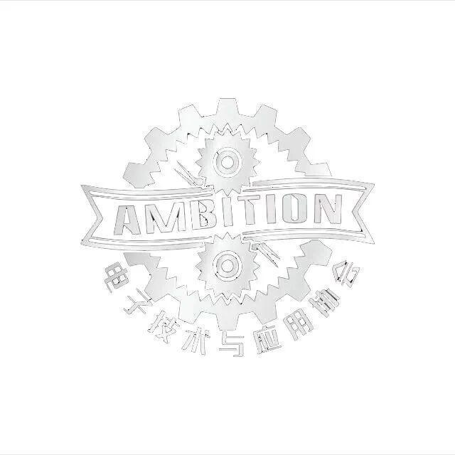
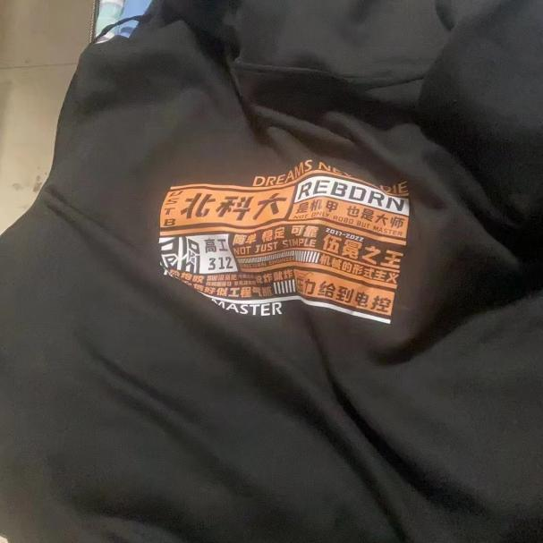
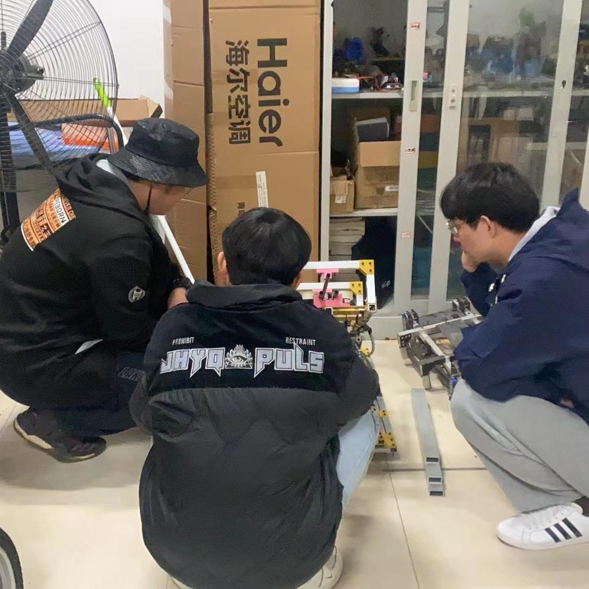
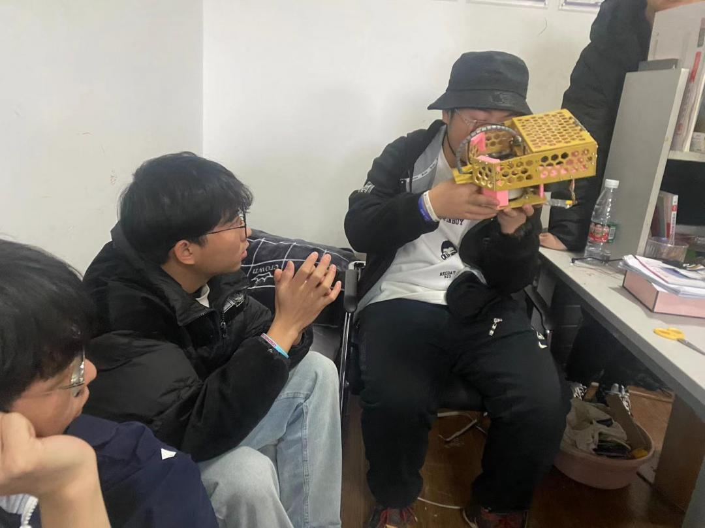
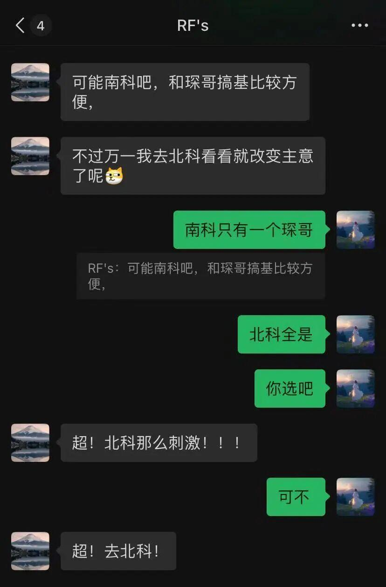
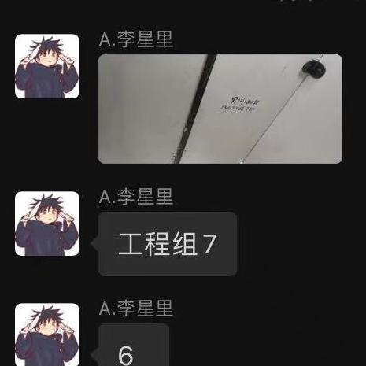
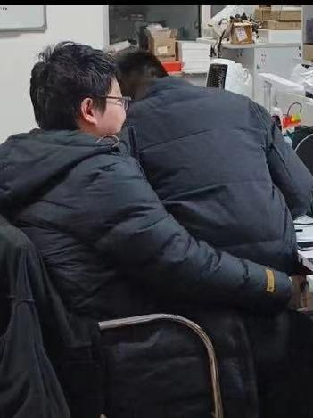
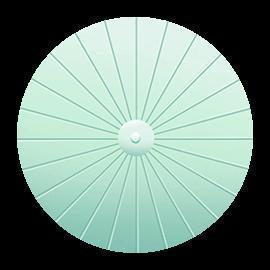
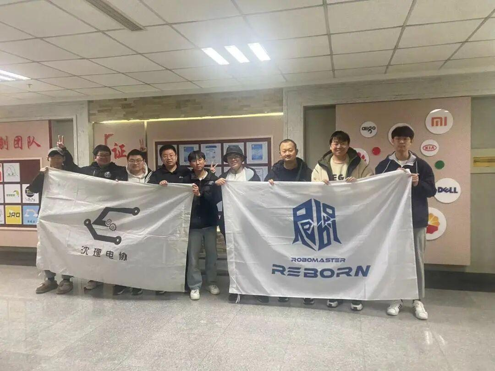

北科&沈理の面基日常

对于北科大的兄弟们来到鄙队，队员们异常兴奋，尤其工程组的兄弟们，受到了极大的影响，到底发生了什么？我们一探究竟......
项管的社交恐怖细胞发作，先认识了北科的项管，俩人交谈甚欢：温龙学长穿北科队服在实验室遛，北科在给每个队员留下了深刻的印象；接着，某项管因为不可说的原因，在分享会加人队长，水群加了老队长。（emmmm某项管的社交恐怖细胞太可怕，还好贵队不嫌弃）
种种渊源，缘分，天时地利人和，很荣幸，贵队能来到我们实验室。

据说每一个梗都有很长的故事，队服好帅，斯哈...斯哈...
(小编也想要/(ㄒoㄒ)/~~）

作为一个正儿八经儿的RMer，首先来肯定少不了技术交流。对于管理也进行了一定交流......
北科大佬也给出了很多宝贵的建议，受益匪浅，尤其是机械方面。讨论了飞镖的摩擦轮、步兵的云台结构等内容......
人员管理调动，人员分配与传承方面也给予了一定的帮助。



（老队长眼神好霸气，爱啦爱啦~）

周边是所有队员都最喜欢的文化交流了吧~俩队互换了周边~北科的周边也太好看，太有意义了吧~（宋嘉鑫--工程组电控：慧姐，你什么时候能让运营做一些这样的鼠标垫~）人还没走，贴纸已经贴上了，手环也都带上啦~
[ 图片滑动 ]
感觉这个青蛙和北科队长很配（小编拿来充公啦，哈哈哈哈）

贵队来了之后，队里的工程组变化尤其明显，让本不对劲的工程组，更加不对劲啦~工程组格外的兴奋~



RMer就要基情四射

什么能比干饭更重要呢？？

（希望北科不嫌弃我们队的干饭形象）



最后，预祝沈理和北科迈北进深，闯进国赛，相遇春茧体育馆。也祝俩个队伍友谊天长地久~~
不得不说，北科的队旗真的有点帅！
（希望你们不要打小编，除了北科队长好像都没有打备注）
排版|硬件小白菜
文案|小孙
图片|小慧
审核|下不了班的项管